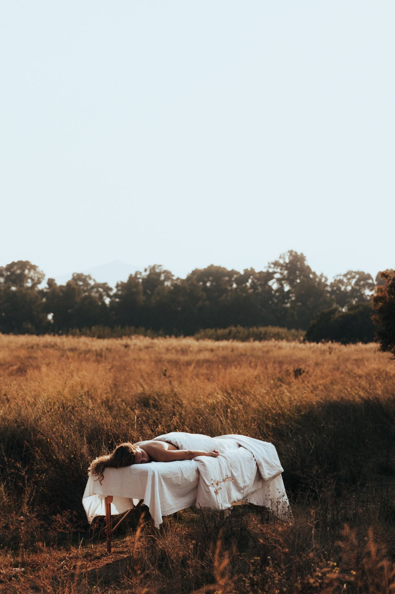

Γνωρίζω πόσο πολύτιμος είναι ο χρόνος και τα χρήματα σας. Για αυτό σε κάθε θεραπεία είμαι παρούσα στη στιγμή, σώμα & ψυχή.
Η ΦΙΛΟΣΟΦΙΑ ΜΟΥ
«Ένα ολιστικό ταξίδι με στόχο την αληθινή φροντίδα σ' όλα τα επίπεδα, είναι κάτι παραπάνω από μία περιποίηση προσώπου. Είναι μία στιγμή απλά για να υπάρχεις. Είναι σύνδεση των δύο.»

Ακόμα και στις μέρες μας κάποια καλλυντικά προϊόντα δοκιμάζονται σε ζώα. Αυτό δεν ισχύει για το House spa.
Φυσικά, βιολογικά προϊόντα με πιστοποίηση, που σέβονται τον άνθρωπο και υποστηρίζουν τη βιώσιμη ομορφιά.
Ολιστική περιποίηση δέρματος και ολοκληρωμένη εκπαίδευση. Προσαρμοσμένο μόνο για εσάς, για τον δικό σας τύπο δέρματος, υποστηρίζοντας το μικροβίωμα, κάνοντας το δέρμα σας υγιές και ζωντανό.
Είμαι η Ιωάννα Βαρδάκη.
Tο πάθος μου για τη φυσική ομορφιά και την ολιστική
ευεξία με
οδήγησαν στο να αφιερωθώ στην εκπαίδευση και την πρακτική εφαρμογή θεραπειών που
αναδεικνύουν τη συνολική ευεξία
του σώματος και του πνεύματος.

Τα προϊόντα μας είναι μη τοξικά και είναι γεμάτα με βότανα, φρούτα, ρίζες, άνθη, καρπούς, έλαια & αιθέρια έλαια. Ισχυρά εκχυλίσματα και αφεψήματα ολόκληρων φυτών.
Φυσικά, βιολογικά προϊόντα με πιστοποίηση, που σέβονται τον άνθρωπο και υποστηρίζουν τη βιώσιμη ομορφιά.
Τα προϊόντα μας είναι μη τοξικά και είναι γεμάτα με βότανα, φρούτα, ρίζες, άνθη, καρπούς, έλαια & αιθέρια έλαια. Ισχυρά εκχυλίσματα και αφεψήματα ολόκληρων φυτών.
«Η φιλοσοφία μου είναι ότι η ομορφιά και η ευεξία είναι αλληλένδετες. Η εκπαίδευσή μου στις παραπάνω θεραπείες με βοηθά να προσφέρω στους πελάτες μου μια ολοκληρωμένη προσέγγιση που προάγει τη φυσική ομορφιά, την εσωτερική ισορροπία και την γενική ευεξία. Συνεχίζω να επεκτείνω τις γνώσεις μου και να ενσωματώνω νέες τεχνικές για να παρέχω τις πιο αποτελεσματικές και καινοτόμες θεραπείες.»
ΤΑ ΚΑΛΛΥΝΤΙΚΑ ΜΑΣ
Η 🌿WHAMISA🌿 είναι η πρώτη πιστοποιημένη μάρκα βιολογικών και φυσικών προϊόντων, και ένας από τους πρωτοπόρους στον τομέα της πράσινης ομορφιάς. Όλα τα προϊόντα Whamisa είναι εντελώς απαλλαγμένα από νερό, αυτό είναι ένα από τα ισχυρότερα χαρακτηριστικά της. Τα άνυδρα προϊόντα είναι πολύ σπάνια στην αγορά καλλυντικών επειδή αντί για νερό, απαιτούν ένα φυσικό υποκατάστατο που είναι πάντα πιο ακριβό από το ίδιο το νερό.
Είναι πρωτοπόροι με κατοχυρωμένη πατέντα ευρεσιτεχνίας για τη μέθοδο της ζύμωσης, προσθέτοντας ένα βακτήριο που αναπτύχθηκε για τα καλλυντικά τους. Η ζύμωση ενισχύει την ισχύ των συστατικών και έτσι επιτυγχάνεται η ανώτερη απορρόφηση των συστατικών στα βαθύτερα στρώματα του δέρματος. Κάτι που δε μπορεί πολλές φορές να επιτευχθεί συνθετικά.
Η φόρμουλα της Whamisa είναι 100% φυτική και vegan. Είναι κατά κύριο λόγο αντίθετοι στη χρήση οποιωνδήποτε ζωικών και συνθετικών συστατικών, συμπεριλαμβανομένων των τεχνητών χρωστικών και αρωμάτων, ωστόσο, τα προϊόντα είναι εμποτισμένα με αιθέρια έλαια υψηλής ποιότητας σε μικρή δόση ώστε να παρέχουν μια αισθητική εμπειρία. Δεν αγάπα τη χημεία των συνθετικών συστατικών γι' αυτό χρησιμοποιεί: ρίζες, άνθη, σπόρους και φρούτα. Η φύση αποτελεί την καρδιά των συνταγών.
Η μοναδική άνυδρη καινοτόμος φόρμουλα, μας αρέσει γιατί τα καλλυντικά είναι συμπυκνωμένα, που σημαίνει ότι χρειάζεσαι λιγότερη ποσότητα προϊόντος. Ως αποτέλεσμα, υπάρχει μείωση σε σπαταλη ενέργειας και λιγότερες συσκευασίες για ανακύκλωση. Η χρήση χημικών συντηρητικών έχει αρκετές αρνητικές επιπτώσεις στην υγεία, συμπεριλαμβανομένου του αυξημένου κινδύνου συσσώρευσης τοξικών χημικών στο δέρμα μας. Η Whamisa παρασκευάζει μόνο με φυσικά συντηρητικά φυτικής προέλευσης.